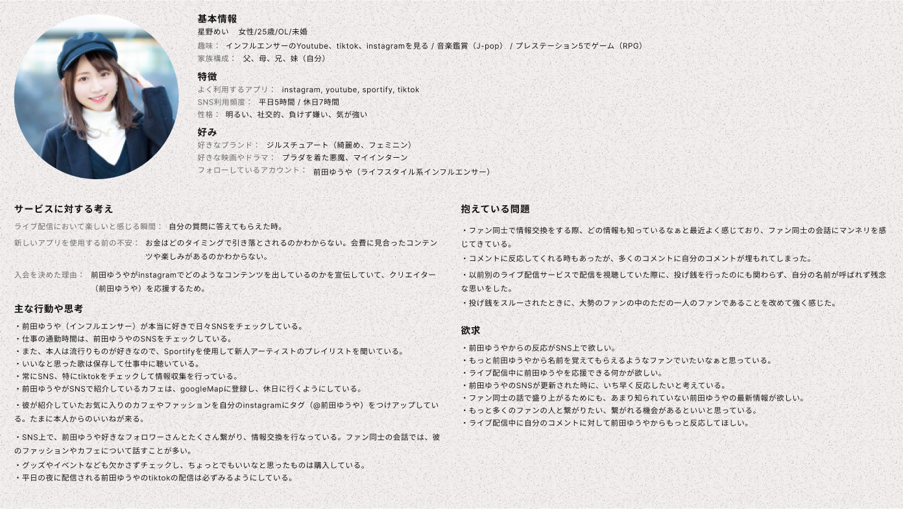
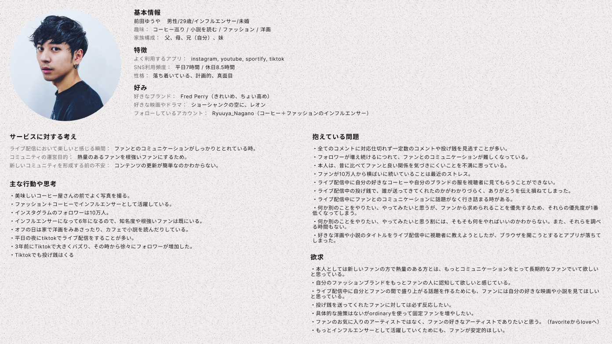
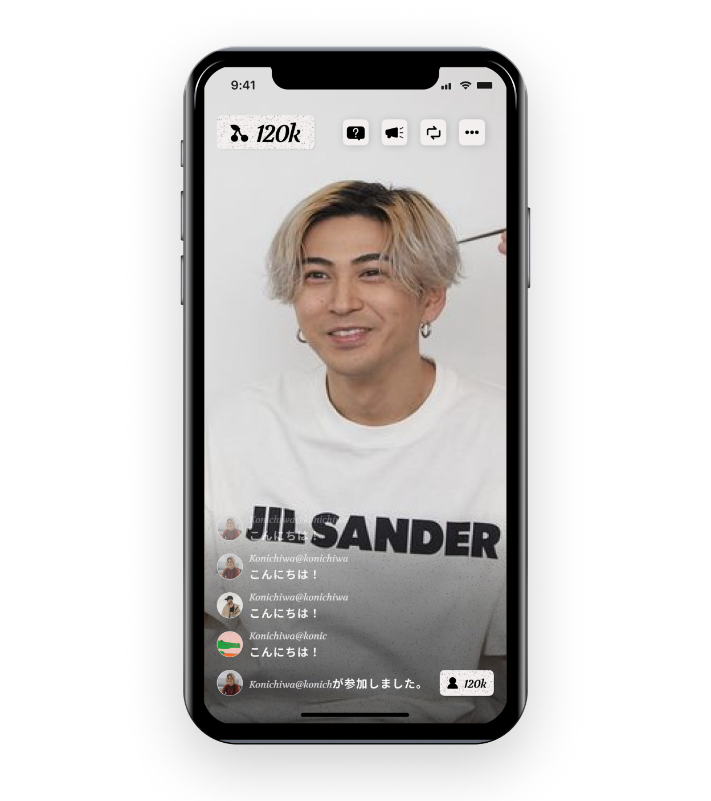
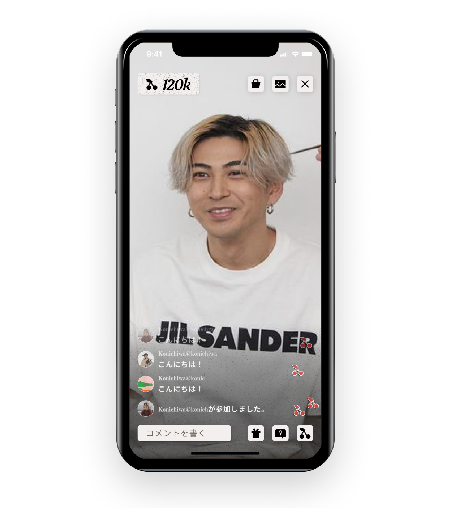

Work Detail
ライブ配信サービス：APP
新機能であるライブ配信機能を既存アプリに入れる予定で、そのUIデザインを提案しました。
ペルソナから考え、ペルソナにあった機能やデザインテイスト、コンセプトを考えて配信者用・視聴者用のUIデザインを作成しました。
担当：
期間：
ツール：
情報設計、UI/UXデザイン
2021年6月末 〜
Figma
Persona
Persona
仮ペルソナを作成し、他アプリでライブ配信を見ているときに発生しえるユーザーが抱える問題や欲求を書き出しました。
ピンチでズームアップして以下の資料を見ていただければと思います。
ピンチでズームアップして以下の資料を見ていただければと思います。

視聴者のペルソナ（仮）

配信者のペルソナ（仮）
UI Design
Concept
クリエーターとファンが特別な繋がりを感じるライブ配信機能
closedな特別な空間でお互いに繋がりを感じると、クリエイターとファンがお互いに楽しい時間を過ごせる。
その結果、クリエイターはファンのために活動しようと思えるし、ファンはクリエイターのことがもっと好きになり応援したいと思える。このクリエイターとファンの特別な繋がりがサービスの発展につながり、ステークホルダー全員が幸せになれると考えた。
Description
ペルソナから引きこみたい世界観として、1950’s アメリカンダイナーやロカビリーぽい雰囲気を選びました。
テイスト実現のために行ったことは以下です。
テイスト実現のために行ったことは以下です。
1. フォント→太め、大きめ、セリフ体、文字の間隔狭め 30px。他とのフォントのジャンプ率。
2. いいねをハートではなく、さくらんぼで世界観を表現
3. べた塗りのアイコン→ピクトグラム感を再現
4. ノイズで古紙感の実現
5. 赤と白＋2D感のある立体感を表現
2. いいねをハートではなく、さくらんぼで世界観を表現
3. べた塗りのアイコン→ピクトグラム感を再現
4. ノイズで古紙感の実現
5. 赤と白＋2D感のある立体感を表現
しかし、あくまで視聴することや配信することに集中してほしいため、上記の世界観の表現は必要最低限にしています。
そのため、アニメーション以外では、奇抜な色は配信者の邪魔になるため使用していません。 また、要素の視認性を上げるため、若干のシャドウをボタンなどに入れています。
そのため、アニメーション以外では、奇抜な色は配信者の邪魔になるため使用していません。 また、要素の視認性を上げるため、若干のシャドウをボタンなどに入れています。

視聴者の画面

配信者の画面